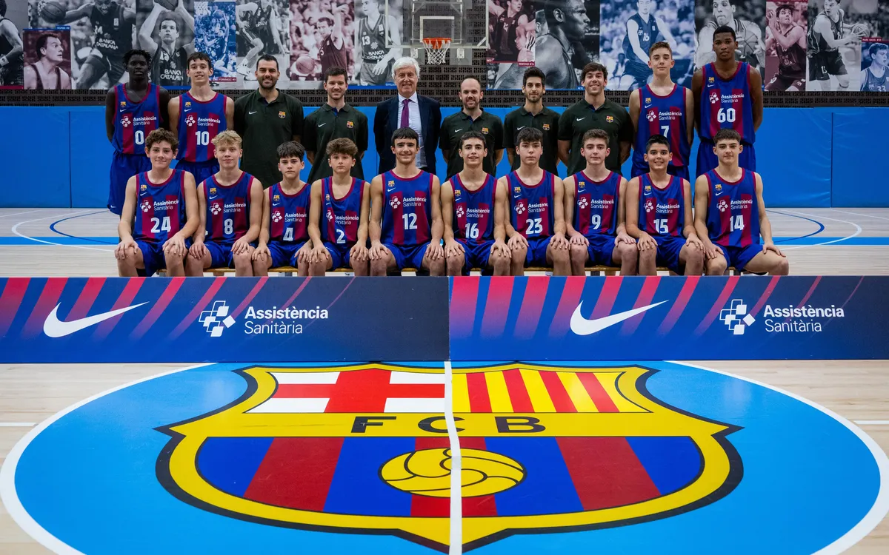

Actualidad|PoucelonaFC
PoucelonaFC Lanza Iniciativa para Fomentar el Deporte Infantil en la Comunidad
El PoucelonaFC apuesta por el futuro: Formando campeones y ciudadanos ejemplares en la comunidad.
10 de octubre de 2023
El PoucelonaFC, el influyente club de fútbol con sede en Poucelona, ha anunciado una iniciativa revolucionaria destinada a promover el deporte infantil y el desarrollo de jóvenes talentos en la comunidad local. El club, conocido no solo por su éxito en el campo de juego sino también por su compromiso social, está dando un paso importante para enriquecer la vida de los jóvenes futbolistas en la región.
La iniciativa, denominada "PoucelonaFC: Raíces y Sueños", tiene como objetivo principal proporcionar acceso gratuito a programas de formación deportiva de alta calidad para niños y niñas de edades comprendidas entre 6 y 14 años en Poucelona y sus alrededores. Además de entrenamiento en fútbol, el programa incluirá actividades para fomentar la educación, el trabajo en equipo y los valores deportivos.

El presidente del PoucelonaFC, M. Sanchez, afirmó en un audio filtrado que esta iniciativa es un testimonio del compromiso del club con la comunidad y su deseo de contribuir al desarrollo integral de los jóvenes talentos:
El programa contará con entrenadores altamente calificados y se llevará a cabo en las instalaciones de entrenamiento de última generación del club. Además, se proporcionarán becas para aquellos talentos prometedores que deseen continuar su desarrollo en las categorías juveniles del PoucelonaFC.
Esta iniciativa ha sido recibida con entusiasmo por parte de la comunidad y de los padres de los jóvenes interesados en el fútbol. Se espera que "PoucelonaFC: Raíces y Sueños" no solo ayude a formar a futuros futbolistas de élite, sino que también tenga un impacto positivo en la vida de los niños y niñas de la región, fomentando un estilo de vida activo y saludable, así como valores de respeto y trabajo en equipo.